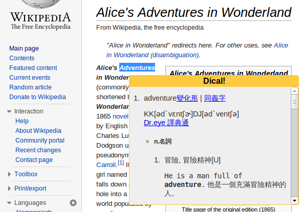

Dical! - Dictionary extenstion for Chrome
瀏覽網頁時，只要點兩下圈選單字，右下角跳出單字翻譯視窗
簡單又快速
支援中英-英中字典
使用Yahoo的字典功能
安裝
使用 Chrome 時，您可以按照以下步驟加入擴充功能：
請對下方的link右鍵點擊後，另存新檔儲存至您的電腦。
dicall.crx
按一下瀏覽器工具列中的 Chrome 選單圖示 Chrome menu。
依序選取 [工具] > [擴充功能]。
在電腦上找出擴充功能擋案，並拖曳到「擴充功能」頁面。
在隨即顯示的對話方塊中檢閱權限清單。如果您要繼續進行，請按一下 [安裝]。
由於本套件尚未上架，請先手動安裝 :P
by Sean Lee 2013/10/18
Email:
weilonge@gmail.com
Blog:
seanlee99.blogspot.com
